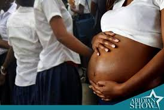

a martelé Ibrahima Sangaré, citoyen.
La faute étant des deux côtés, il faut noter que les grossesses précoces freinent la scolarité des adolescentes, Qu’elles soient en union ou non, 50 à 75 % des adolescentes abandonnent l’école au cours de la grossesse et seulement peu y retourneront.
Malgré les nombreuses séances de sensibilisation par les autorités sur les méthodes contraceptives, certaines élèves sont sexuellement actives mais ne prennent aucune précaution pour prévenir les grossesses.
Ainsi, des milliers de cas de grossesses sont enregistrées tous les ans en milieu scolaire tant au niveau primaire que secondaire.
La pratique de rapports sexuels non protégés chez les adolescentes :
L’ignorance
la non maitrise ou la mauvaise application et utilisations des moyens contraceptifs.
Un accès difficile aux contraceptifs
Un manque criard d’éducation à une sexualité responsable dans nos écoles et en famille. (cas du Bénin)
Harcèlement sexuel

Lorsqu’une jeune élève est enceinte, elle constitue un véritable problème pour elle-même, pour ses parents, un handicap pour ses études et son développement personnel. Ainsi les conséquences de ce phénomène sont de plusieurs plans : il s’agit du plan sanitaire, du plan moral et du plan scolaire.
Conséquences sur le plan sanitaire
Conséquences sur le plan moral
Conséquences sur le plan scolaire
Pour remédier, un temps soit peu à cette situation de grossesses en milieu scolaire, des recommandations ont été faites à divers acteurs dont leurs actions auraient des impacts positifs pour prévenir et amoindrir les conséquences.
1-Elèves – Sensibilisation(travail des pères éducateurs)
−Mise en place des comités de vigilance – Identification des élèves victimes
−Dénonciation des auteurs,
2-Parents d’élèves – Discussion ouverte avec enfants
−Suivre les enfants dans les établissements
−Prise en charge psychologique
−Réinsertion et Réintégration
3-Administration scolaire et enseignements – Eviter les relations coupables avec les élèves
−Organisation régulières des séances de sensibilisation
−Divulguer les textes en vigueur
−Introduire les questions d’éducation sexuelle dans le programme formel
-Dénoncer à l’administration centrale les auteurs
−Faire appliquer les textes en vigueur en vue des sanctions administratives
4-Institutions internationales
-Législations
−Appui logistique
5-Etat et Communes
-Législation / Réglémentation
−Formation des travailleurs sociaux et des enseignants
−Appui aux initiatives communautaires
-Application des lois
−Suivi des dossiers de justice
−Mise en place de centres spécialisés pour enfants
6-Société civile
−Prise d’initiatives communautaires
−Information, sensibilisation, formation sur le phénomène
−Plaidoyer pour amener l’Etat et les parents à jouer leur role
−Identifications des écoles, des régions et des groupes sociaux à risque – Formation des groupes à l’accompagnement psychosocial des filles
−Identification des victimes
−Mise en place des comités de Veil
−Dénonciation des auteurs
−Lobbying pour lutter contre l’impunité
−Suivi des élèves réhabilités
7-Médias - Spécialisation des journalistes sur ces questions
Sensibilisation de la population